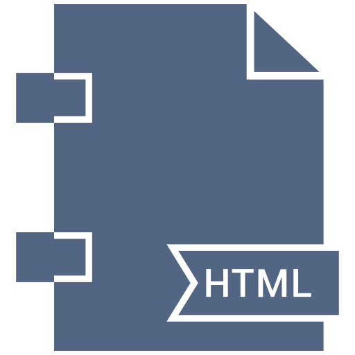

tema4-4a

¿Que son las Cookies?Una cookie es una pequeña información enviada por un sitio web y
almacenada en el
navegador del usuario, de manera que el sitio web puede consultar la actividad previa del navegador.
¿Paraqué sirven las Cookies?- Recordar accesos:Conocer si ya se ha visitado
la página para actuar
en consecuencia, por ejemplo mostrando o no cierto contenido, recordar a un usuario, etc.
- Habitos de navegación:Conocer información
sobre
los hábitos de
navegación, e intentos de spyware (programas espía), por parte de agencias de publicidad y otros.
Ataque Cookie Poisoning
¿Que es HTTP?El Protocolo de transferencia de hipertexto (en inglés:
Hypertext
Transfer Protocol o
HTTP) es el protocolo de comunicación que permite las transferencias de información en la World Wide
Web. ¿Paraqué sirve HTTP?Permite la trasnferencia de información mediante protocolos de
comunicación en la web.
HTTP Spoof